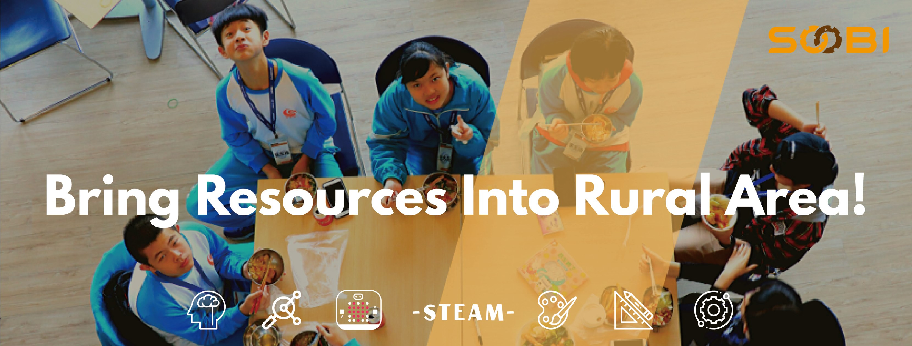

李伊，宜蘭人，政大中文系畢業，目前為Soobi計畫助理，負責處理活動安排聯繫及各項計畫相關推動事宜。現在在做Soobi社課之網頁設計課程的第一件回家作業。
施筆獸(Soobi)計劃，本著「施比受更有福」的精神，致力於整合大學端資源，應用新媒體，以創新模式推動服務與學習的數位偏鄉教育方案。
Soobi以大學為基地透過數位科技(錄播車即時連線互動、線上教學、電子白板教學輔助)以及結合大學志工的力量致力於偏鄉教育。因應資訊編程教育人才及師資的需求懇切，Soobi
選定入門容易、購入門檻低且可擴充性高的Micro:bit為程式設計的教學硬體，在大學內以短期培訓課的增能方式，讓具備教學能力的大學志工透過寓教於樂的營隊活動方式，觸發偏鄉學童們的學習動機同時也增進大學志工的專業知能，短期內即廣受學業界的重視。
Soobi希望藉由培訓志工編碼知識與能力，以大學生增能的方式培訓志工，透過營隊活動將程式設計教育帶入偏鄉學校，藉此推動資訊教育平權。通過培訓及認證考試後，也將有機會成為程式設計課程講師！
